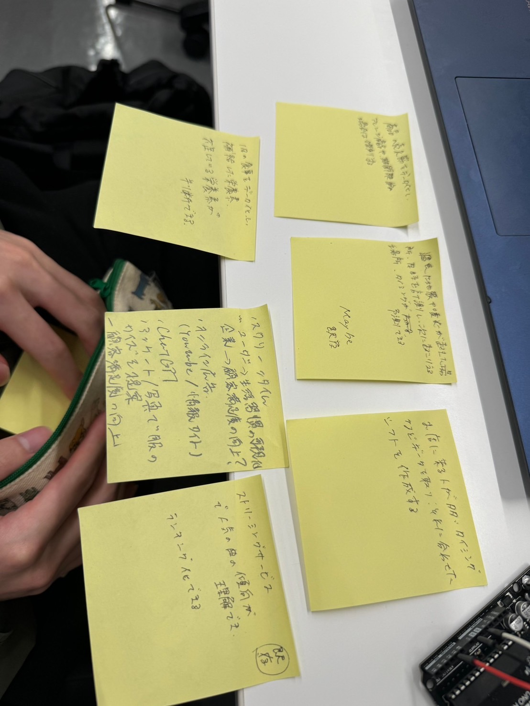

arduinoを利用したスロットの目押しトレーニング
プログラムの書き込み
主に"sw_state=0 "：出目をランダムに表示する ” sw_state=1 ”：１つの出目を固定して表示する 
班で考えたIOTを利用価値は生活習慣の管理です。勿論、食生活などは入力しなければいけない項目はあるのですが継続すれば良い体調が維持できると考えました。
他のアイデア等は、CHATGPTなどの既存のものが挙げられました。